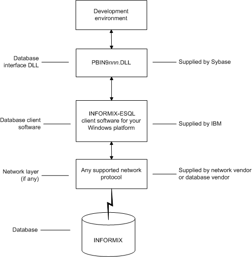

This section describes how to use the native IBM Informix database interface in PowerBuilder.
You can access the following Informix databases using the native Informix database interface:
PowerBuilder provides the IN9 interface in the PBIN9105.DLL to connect through Informix-Connect version 9.x client software.
PowerBuilder can connect, save, and retrieve data in ANSI/DBCS databases. The Informix native driver does not currently support access to Unicode databases.
The Informix database interface supports the Informix datatypes listed in Table 6-1 in DataWindow objects and embedded SQL.
 Exceptions Byte, text, and VarChar datatypes are not supported in Informix
SE.
Exceptions Byte, text, and VarChar datatypes are not supported in Informix
SE.
 Datatype conversion When you retrieve or update columns, PowerBuilder converts
data appropriately between the Informix datatype and the PowerScript
datatype. Keep in mind, however, that similarly or identically named
Informix and PowerScript datatypes do not necessarily
have the same definitions.
Datatype conversion When you retrieve or update columns, PowerBuilder converts
data appropriately between the Informix datatype and the PowerScript
datatype. Keep in mind, however, that similarly or identically named
Informix and PowerScript datatypes do not necessarily
have the same definitions.
The DateTime datatype is a contiguous sequence of boxes. Each box represents a component of time that you want to record. The syntax is:
DATETIME largest_qualifier TO smallest_qualifier
PowerBuilder defaults to Year TO Fraction(5).
For a list of qualifiers, see your Informix documentation.
 To create your own variation of the DateTime datatype:
To create your own variation of the DateTime datatype:
In the Database painter, create a table with a DateTime column.
For instructions on creating a table, see the User's Guide .
In the Columns view, select Pending Syntax from the Objects or pop-up menu.
The Columns view displays the pending changes to the table definition. These changes execute only when you click the Save button to save the table definition.
Select Copy from the Edit or pop-up menu
or
Click the Copy button.
The SQL syntax (or the portion you selected) is copied to the clipboard.
In the ISQL view, modify the DateTime syntax and execute the CREATE TABLE statement.
For instructions on using the ISQL view, see the User's Guide.
The Informix database interfaces also support a time datatype. The time datatype is a subset of the DateTime datatype. The time datatype uses only the time qualifier boxes.
The interval datatype is one value or a sequence of values that represent a component of time. The syntax is:
INTERVAL largest_qualifier TO smallest_qualifier
PowerBuilder defaults to Day(3) TO Day. For more about interval datatypes, see your Informix documentation.
Figure 6-2 shows the basic software components required to access an Informix database using the native Informix database interfaces.

Before you define the database interface and connect to an Informix database in PowerBuilder, follow these steps to prepare the database for use:
You must install and configure the required database server, network, and client software for Informix.
 To install and configure the required database
server, network, and client software:
To install and configure the required database
server, network, and client software:
Make sure the Informix database server software and database network software is installed and running on the server specified in your database profile.
You must obtain the database server and database network software from Informix.
For installation instructions, see your Informix documentation.
Install the required Informix client software on each client computer on which PowerBuilder is installed.
Install Informix Connect or the Informix Client SDK (which includes Informix Connect) and run the SetNet32 utility to configure the client registry settings.
You must obtain the Informix client software from IBM. Make sure the version of the client software you install supports all of the following:
For installation instructions, see your Informix documentation.
Make sure the Informix client software is properly configured so that you can connect to the Informix database server at your site.
For example, when you install Informix-Connect client software, it automatically creates the correct configuration file on your computer.
The configuration file contains default parameters that define your network configuration, network protocol, and environment variables. If you omit these values from the database profile when you define the native Informix database interface, they default to the values specified in your configuration file.
For instructions on setting up the Informix configuration file, see your Informix documentation.
If required by your operating system, make sure the directory containing the Informix client software is in your system path.
In the PowerBuilder Setup program, select the Typical install, or select the native Informix database interface in the Custom install.
Make sure you can connect to the Informix server and database you want to access from outside PowerBuilder.
To verify the connection, use any Windows-based utility (such as the Informix ILOGIN.EXE program) that connects to the database. When connecting, be sure to specify the same parameters you plan to use in your PowerBuilder database profile to access the database.
For instructions on using ILOGIN.EXE, see your Informix documentation.
To define a connection through an Informix database interface, you must create a database profile by supplying values for at least the basic connection parameters in the Database Profile Setup - Informix IN9 dialog box. You can then select this profile at any time to connect to your database in the development environment.
For information on how to define a database profile, see "Using database profiles".
When you specify the server name value, you must use the following format to connect to the database through the Informix interface:
host_name@server_name
For example, to use the IN9 interface to connect to an Informix database server named server01 running on a host machine named sales, do either of the following:
SQLCA.ServerName = "sales@server01"
If you are connecting to an Informix database from a PowerBuilder script, you can obtain the serial number of the row inserted into an Informix table by checking the value of the SQLReturnData property of the Transaction object.
After an embedded SQL INSERT statement executes, SQLReturnData contains the serial number that uniquely identifies the row inserted into the table.
PowerBuilder updates SQLReturnData following an embedded SQL statement only; it does not update it following a DataWindow operation.
For instructions on connecting to the database, see "Connecting to a database".